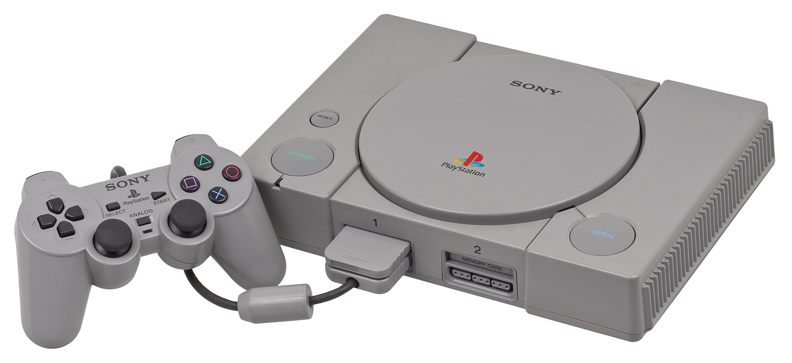

The Two Main Contenders
Playstation
"PlayStation is a gaming brand that consists of four home video game consoles, as well as a media center, an online service, a line of controllers, two handhelds and a phone, as well as multiple magazines. It is created and owned by Sony Interactive Entertainment since December 3, 1994, with the launch of the original PlayStation in Japan.
The original console in the series was the first video game console to ship 100 million units, 9 years and 6 months after its initial launch. Its successor, the PlayStation 2, was released in 2000. The PlayStation 2 is the best-selling home console to date, having reached over 155 million units sold as of December 28, 2012. Sony's next console, the PlayStation 3, was released in 2006 and has sold over 80 million consoles worldwide as of November 2013. Sony's latest console, the PlayStation 4, was released in 2013, selling 1 million consoles in its first 24 hours on sale, becoming the fastest selling console in history.
The first handheld game console in the PlayStation series, the PlayStation Portable or PSP, sold a total of 80 million units worldwide by November 2013. Its successor, the PlayStation Vita, which launched in Japan on December 17, 2011 and in most other major territories in February 2012, had sold over 4 million units by January 2013. PlayStation TV is a microconsole and a non-portable variant of the PlayStation Vita handheld game console. Other hardware released as part of the PlayStation series includes the PSX, a digital video recorder which was integrated with the PlayStation and PlayStation 2, though it was short lived due to its high price and was never released outside Japan, as well as a Sony Bravia television set which has an integrated PlayStation 2. The main series of controllers utilized by the PlayStation series is the DualShock, which is a line of vibration-feedback gamepad having sold 28 million controllers as of June 28, 2008.
The PlayStation Network is an online service with over 110 million users worldwide (as of July 2013). It comprises an online virtual market, the PlayStation Store, which allows the purchase and download of games and various forms of multimedia, a subscription-based online service known as PlayStation Plus and a social gaming networking service called PlayStation Home, which had over 41 million users worldwide at the time of its closure in March 2015. PlayStation Mobile (formerly PlayStation Suite) is a software framework that provides PlayStation content on mobile devices. Version 1.xx supports both PlayStation Vita, PlayStation TV and certain devices that run the Android operating system, whereas version 2.00 released in 2014 would only target PlayStation Vita and (optionally) PlayStation TV. Content set to be released under the framework consist of only original PlayStation games currently.
7th generation PlayStation products also use the XrossMediaBar, which is an award-winning graphical user interface. A touch screen-based user interface called LiveArea was launched for the PlayStation Vita, which integrates social networking elements into the interface. Additionally, the PlayStation 2 and PlayStation 3 consoles also featured support for Linux-based operating systems; Linux for PlayStation 2 and OtherOS respectively, though this has since been discontinued. The series has also been known for its numerous marketing campaigns, the latest of which being the "Greatness Awaits" commercials in the United States.
The series also has a strong line-up of first-party titles due to Sony Interactive Entertainment Worldwide Studios, a group of fifteen first-party developers owned by Sony Interactive Entertainment which are dedicated to developing first-party games for the series. In addition, the series features various budget re-releases of titles by Sony with different names for each region; these include the Greatest Hits, Platinum, Essentials, Favorites and The Best ranges of titles.”
X-box
"Xbox is a video gaming brand created and owned by Microsoft. It represents a series of video game consoles developed by Microsoft, with three consoles released in the sixth, seventh and eighth generations respectively. The brand also represents applications (games), streaming services, and an online service by the name of Xbox Live. The brand was first introduced in the United States in November 2001, with the launch of the original Xbox console.

That original device was the first video game console offered by an American company after the Atari Jaguar stopped sales in 1996. It reached over 24 million units sold as of May 2006. Microsoft's second console, the Xbox 360, was released in 2005 and has sold over 77.2 million consoles worldwide as of April 2013. The successor to the Xbox 360 and Microsoft's most recent console, the Xbox One. was revealed in May 2013. The Xbox One has been released in 21 markets in total, with a Chinese release in September 2014. The head of Xbox is Phil Spencer, who succeeded former head Marc Whitten in late March 2014."